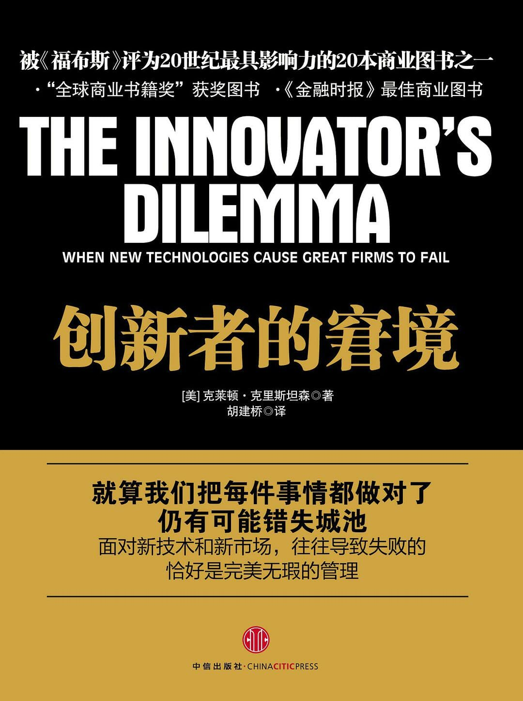

注：【】部分为笔者心得，非原文摘抄。
- 所有的延续性技术所具有的共同点就是，它们都是根据主要市场的主流消费者一直以来所看重的性能层面来提高成熟产品的性能。
- 在开发比竞争对手更好的产品以获得更高的售价和更大的利润率的过程中，供应商通常“过度满足”了市场的需求。
- 一般来说，破坏性技术首先会得到市场上不能给企业带来利润的消费者的认可。
- 利用破坏性创新的原则：1，企业的资源分布取决于消费者和投资者；2，小市场并不能解决大企业的增长需求；3，无法对并不存在的市场进行分析；4，机构的能力决定了它的局限性；5，技术供应可能并不等同于市场需求。
- 成熟企业总是能在一轮又一轮的延续性技术浪潮中保持领先地位，但往往在面临更为简单的破坏性技术时遭遇失败。
- 尽管管理者可能认为是他们在控制企业内部的资源流动，但最终真正决定资金将如何花费的实际上是消费者和投资者，因为投资模式无法达到消费者和投资者的要求的企业将难以为继。
- 当企业管理者按照资源依赖理论的规律管理企业，而不是选择忽视或违背这些规律，那么这些企业就可能在破坏性技术变革中获得成功。
- 当面临破坏性技术的威胁时，主流成熟企业的人员和流程并不能自由地分配所需的关键性财务和人力资源来开拓小型新兴市场，成本结构主要针对高端市场竞争的企业也很难在低端市场获取利润。
- 一个企业发展得越大、越成功，新兴市场所发挥的企业增长引擎的作用就会越弱。
- 机构所具备的能力独立于机构内部工作人员而存在。
- 不管是技术变革的速度或者难度都不是导致领先企业失败的根本原因，“科技泥流假设”是错误的。
- 一般来说，破坏性创新并不涉及特别复杂的技术变革，其主要表现形式就是讲成品元件组装在一起，但相比之前的产品，产品结构通常会变得更加简单。
- 当成熟企业等到新技术在新的商业应用领域逐渐发展成熟之后，才为了抵御自己的主要市场所受到的冲击推出相关技术产品时，那它们对市场侵蚀的担心就将发展为一个自我应验的预言。
- 企业的组织结构通常能够推动组件层面的创新，因为大多数产品研发机构都是由各个负责产品元件研究的小组组成的，但在需要对结构性技术作出改变时，这种结构体系将阻碍那些需要人员和团队以全新的方式进行交流和工作的创新。
- 组织结构及其团队合作方式可能会影响到企业能否设计出新产品。
- 技术变革相对于企业能力的规模和深度将决定哪些企业将安然渡过某次技术变革浪潮。
- 成熟企业一般善于改善业已成熟的技术，而新兴企业似乎更善于利用突破性新技术。
- 每一个价值网都会按照重要性的高低对不同的产品性能属性进行排序。从某种程度上说，价值网的界定就是由这种独特的排序所决定的。
- 每个价值网成本结构的特点都会对企业认为有利可图的创新类型产生巨大的影响。从本质上说，在企业价值网内受到重视，或发生在基本毛利率较高的价值网内的创新将被视为是有利可图的创新。
- 技术机遇的吸引力和生产商在利用这一机遇时将会遇到的困难程度是由该企业在相关价值网中所处的地位，以及其它诸多因素决定的。
- 价值网内的竞争和消费者需求在很多情况下决定了企业的成本结构、企业保持竞争力所需的规模，以及必须实现的基本增长率。
- 优秀的管理者只做对企业有意义的事情，而什么是有意义的事情则由企业所处的价值网来决定。
- 成熟企业对低端市场和新兴企业对高端市场的看法并不对称。
- 从价值网的下方发起攻击的企业也带来了一种可以以较低的毛利率实现赢利的成本结构。
- 【消费者“转型”的速度比企业迅速得多。】
- “密切关注你的消费者”这句流行口号似乎并不总是一个经得起推敲的建议。
- 即使成熟企业不具备开发一项新技术所必要的技术能力，但如果它们的客户有这方面的需求，它们也能够利用各种资源来开发或收购这些新技术。
- 企业参与竞争的环境或价值网对它利用和集中必要的资源的能力、克服创新的技术和组织障碍的能力具有深远的影响。
- 决定创新能否取得商业化成功的一项关键决定性因素是，创新能在何种程度上满足价值网内已知参与者的已知需求。
- 成熟企业致力于在成熟市场引入破坏性技术，而成功的新兴企业则发现了一个看重这种技术的新市场。
- 投入研发资源来推出利润率更高、性能更高的产品不但能确保更高的收益率，还能减少企业的投入。
- 理性的资源分配流程就是推动企业跨越价值网的界限不断向上流动、限制企业向下流动的根本原因。
- 大多数创新提议都是由企业中低层人员而非高层人员提出。
- 任何没有针对客户的需求建立资源分配体系的企业都将以失败告终。
- 成熟企业并不是仅仅受到客户需求的制约，还受到它们参与竞争的价值网所固有的财务结构和企业文化的制约——这个制约因素能够湮没任何及时投资下一轮破坏性技术浪潮的理性声音。
- 当企业的客户也在转向高端市场时，对推动企业自己进入高端市场的影响尤其巨大。
- 高端市场的利润率、企业许多客户同时进行的向高端市场的移动，以及削减成本进入低端市场并获取利润的难度——一起构成了企业向下流动的巨大障碍。
- 尽管破坏性技术能够改变基于特征完全不同的各个行业的发展趋势，但在遭遇破坏性技术时，这些行业中导致成败的因素都是一致的。
- 只要企业能够明确地知道它们的客户需要的最终产品是什么，企业就愿意为技术上存在风险的项目投入巨额研发资金。
- 创建一个独立的机构，使这个机构直接面对确实需要这种技术的新型消费者群体。
- 客户对企业能否成功进行投资具有极为重大的影响。
- 在对破坏性技术进行商业推广时，身处破坏性技术变革中的管理者必须成为领先者，而不是追随者。要做到这一点就必须让与目标市场的规模相匹配的商业机构来负责开发破坏性技术项目。
- 创新管理中的一个关键性战略决策就是成为技术变革的领先者是否非常重要，追随者的角色是否也可以接受。
- 当股价停止或下跌时，优先认股权也就失去了它的价值。
- 小市场并不能满足大机构的短期增长需求。
- 让小机构去利用小机遇。
- 追求增长和竞争优势的管理者不必在业务的各个方面都争当领先者。
- 所有由破坏性技术催生的市场在最开始时的规模都很小，先锋企业在这些市场上接到的第一笔订单也都是小订单，培育了这些新兴市场的企业所建立的成本结构也必须使企业能够以很小的规模实现赢利。
- 【“过日子”的思维模式不能用于商业竞争和创新。】
- 在开发破坏性技术时，破坏性技术的市场应用领域不仅是未知的，还是不可知的。
- 成功企业与失败企业的主要差别通常并不是它们最初的战略有多么完美，更重要的是保留足够的资源。
- 对于延续性技术来说，计划必须在采取行动之前制订，预测应该是准确的，消费者的意见应该是可靠地。在延续性技术创新中，认真规划、积极实施是通往成功的阳光大道。但在破坏性技术变革中，必须在制订详尽计划前采取行动。
- 衡量管理者的能力的标准就是他或她是否能够根据不同的任务安排合适的人员，并对其加以培训，使员工能更好地完成所承担的工作。
- 机构的能力往往受到三类因素的影响：资源、流程以及价值观。
- 流程的定义或演变实际上都是为了解决特定的任务。
- 企业的价值观就是在确定决策优先级时所遵循的标准。
- 在企业流程和价值观的形成阶段，创始人的行为和态度具有深远的影响。
- 如果被收购公司的流程和价值观正是过去取得成功的原因，那么保持它的独立性，由母公司向它的流程和价值观提供资源，则是更好的决策。这一决策实质上构成了对新能力的收购。
- 流程和价值观决定了企业将如何整合资源以及创造价值。
- 改变流程的难度非常大，这主要有两个原因：第一，确定机构的界限通常是为了促进当前流程的运作，这些界限能够防止打破机构界限的新流程的建立；第二，有时候管理者并不想放弃现有的流程——原有的工作方法能很好地解决它们在设计之初所针对的问题。
- 当机构遭遇变革时，管理者首先必须要确定他们是否具备成功所需的资源，然后，他们需要再问一个不同的问题：机构是否具备成功所需的流程和价值观？
- 在性能过度供给给破坏性技术带来威胁或机遇时，还会导致产品市场的竞争基础发生根本性变化。
- 破坏性技术的一个基本特征就是它预示了竞争基础即将发生改变。
- 破坏性产品在主流市场几乎没有价值的属性通常成为它们在新兴市场最大的卖点。相比成熟产品，破坏性产品一般更简单、更便宜，也更可靠、更便捷。
- 成功的战略实施者都有一个共同的特点，那就是不管是有意识的还是出于本能，他们都深刻理解了消费者的需求曲线和技术人员的供给曲线。
- 一个独立机构不但能使资源依赖理论为我所用——而不是阻碍项目的进程，而且还能利用“小市场无法解决大企业的增长或赢利需求”这一原则。
- 创新的过程总是充满各种困难和不确定性。
- 对待失败的正确态度：一种是改变主流机构的价值观和文化，另一种是创造一种新的机构价值观和文化。
- 创新到底具有多大的市场破坏性将非常清楚地表明，主流机构的创新项目可能会在何时取得成功，预计可能会在何时遭遇失败。
- 市场要求的或者能够消化的发展速度可能会与技术能够达到的发展速度存在差异。
- 创新管理反映了资源分配流程。
- 正如每个创新问题都有资源分配方面的原因一样，市场与技术的匹配是这个问题的另一面。
- 破坏性技术应被看做是一种市场营销挑战，而不是技术性挑战。
- 大多数机构所具备的能力要比大多数管理者预想的还要细化，还要依赖于具体的环境，因为能力都在价值网内形成的。
- 在许多情况下，当面对破坏性技术时，进行具有决定性的重大投资并没有可供借鉴的参考信息。信息只能是通过对市场和产品进行快速、低成本和灵活的创造性尝试才能逐渐积累起来。
- 市场准入和市场流动经常会遭遇非常强大的壁垒，而且这种壁垒与经济学家之前定义和关注的壁垒类型存在很大的不同。